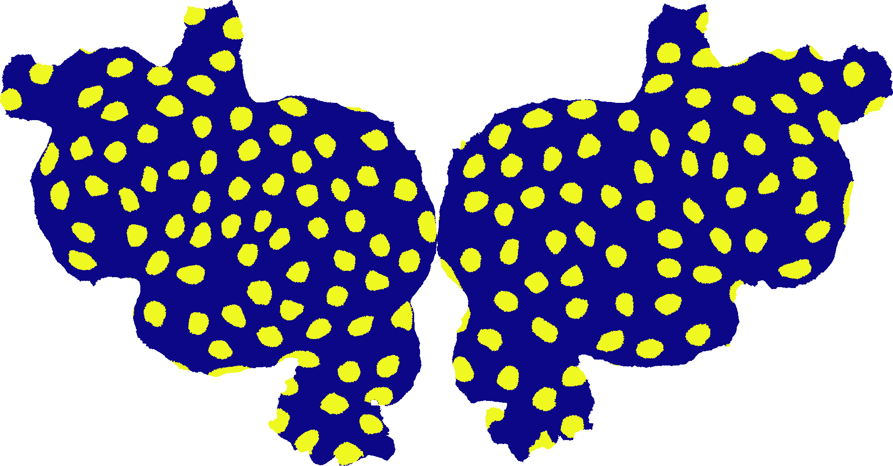

Note
Click here to download the full example code
Tissot’s Indicatrix¶
Creating a flatmap from a folded cortical surface always introduces some distortion. This is similar to what happens when a map of the globe is flattened into a 2-D map like a Mercator projection. For the cortical surface the amount and type of distortion will depend on the curvature of the surface (i.e. whether it is on a gyrus or a sulcus) and on the distance to the nearest cut.
In general, we recommend examining data both in flattened and original 3-D space using the interactive webGL viewer, but it is also informative to visualize the distortion directly.
One method to show distortion is to visualize how geodesic discs, which contain all of the points within some geodesic distance of a central point, appear on the flattened cortical surface.
This technique is traditionally used to characterize and visualize distortions introduced by flattening the globe onto a map:
Out:
Generating tissots_indicatrix surface info...
/home/travis/virtualenv/python3.7.1/lib/python3.7/site-packages/scipy/sparse/linalg/dsolve/linsolve.py:310: SparseEfficiencyWarning: splu requires CSC matrix format
warn('splu requires CSC matrix format', SparseEfficiencyWarning)
Adding vertex 88060..
Adding vertex 93467..
Adding vertex 51981..
Adding vertex 142197..
Adding vertex 104363..
Adding vertex 37286..
Adding vertex 34977..
Adding vertex 14831..
Adding vertex 3410..
Adding vertex 34140..
Adding vertex 63509..
Adding vertex 117329..
Adding vertex 151274..
Adding vertex 83445..
Adding vertex 112573..
Adding vertex 69703..
Adding vertex 140612..
Adding vertex 148039..
Adding vertex 96212..
Adding vertex 82334..
Adding vertex 136892..
Adding vertex 104986..
Adding vertex 131087..
Adding vertex 53098..
Adding vertex 87927..
Adding vertex 63163..
Adding vertex 129645..
Adding vertex 85764..
Adding vertex 1468..
Adding vertex 68143..
Adding vertex 38041..
Adding vertex 132644..
Adding vertex 62457..
Adding vertex 18279..
Adding vertex 30252..
Adding vertex 50858..
Adding vertex 29449..
Adding vertex 101205..
Adding vertex 42921..
Adding vertex 143519..
Adding vertex 15421..
Adding vertex 17795..
Adding vertex 105061..
Adding vertex 39035..
Adding vertex 91669..
Adding vertex 87313..
Adding vertex 117295..
Adding vertex 134981..
Adding vertex 1322..
Adding vertex 115310..
Adding vertex 24973..
Adding vertex 126891..
Adding vertex 5865..
Adding vertex 27294..
Adding vertex 45685..
Adding vertex 17361..
Adding vertex 100552..
Adding vertex 91083..
Adding vertex 150218..
Adding vertex 65499..
Adding vertex 54894..
Adding vertex 68573..
Adding vertex 60742..
Adding vertex 111236..
Adding vertex 2270..
Adding vertex 98973..
Adding vertex 63777..
Adding vertex 133921..
Adding vertex 119121..
Adding vertex 48711..
Adding vertex 5575..
Adding vertex 28653..
Adding vertex 53732..
Adding vertex 108776..
Adding vertex 79220..
Adding vertex 137886..
Adding vertex 53144..
Adding vertex 111002..
Adding vertex 66629..
/home/travis/virtualenv/python3.7.1/lib/python3.7/site-packages/scipy/sparse/linalg/dsolve/linsolve.py:310: SparseEfficiencyWarning: splu requires CSC matrix format
warn('splu requires CSC matrix format', SparseEfficiencyWarning)
Adding vertex 33559..
Adding vertex 19745..
Adding vertex 130690..
Adding vertex 84877..
Adding vertex 37341..
Adding vertex 51690..
Adding vertex 97968..
Adding vertex 20283..
Adding vertex 133522..
Adding vertex 93414..
Adding vertex 35202..
Adding vertex 78917..
Adding vertex 80437..
Adding vertex 111103..
Adding vertex 64118..
Adding vertex 2164..
Adding vertex 55676..
Adding vertex 24564..
Adding vertex 52639..
Adding vertex 73271..
Adding vertex 147408..
Adding vertex 104325..
Adding vertex 138164..
Adding vertex 12066..
Adding vertex 5184..
Adding vertex 73282..
Adding vertex 58398..
Adding vertex 35979..
Adding vertex 68649..
Adding vertex 106574..
Adding vertex 151133..
Adding vertex 111829..
Adding vertex 125877..
Adding vertex 104544..
Adding vertex 16600..
Adding vertex 104120..
Adding vertex 76213..
Adding vertex 22684..
Adding vertex 118700..
Adding vertex 32727..
Adding vertex 86588..
Adding vertex 134423..
Adding vertex 92918..
Adding vertex 57640..
Adding vertex 120087..
Adding vertex 134233..
Adding vertex 48005..
Adding vertex 86454..
Adding vertex 29528..
Adding vertex 118781..
Adding vertex 22902..
Adding vertex 94980..
Adding vertex 87476..
Adding vertex 56426..
Adding vertex 146615..
Adding vertex 75261..
Adding vertex 95071..
Adding vertex 16063..
Adding vertex 42800..
Adding vertex 9344..
Adding vertex 133844..
Adding vertex 139446..
Adding vertex 146241..
Adding vertex 38306..
Adding vertex 132129..
Adding vertex 41503..
Adding vertex 108688..
Adding vertex 6044..
Adding vertex 67298..
Adding vertex 40064..
import cortex
import matplotlib.pyplot as plt
tissot = cortex.db.get_surfinfo("S1", "tissots_indicatrix", radius=10, spacing=30)
tissot.cmap = 'plasma'
cortex.quickshow(tissot, with_labels=False, with_rois=False, with_colorbar=False)
plt.show()
Total running time of the script: ( 0 minutes 47.744 seconds)